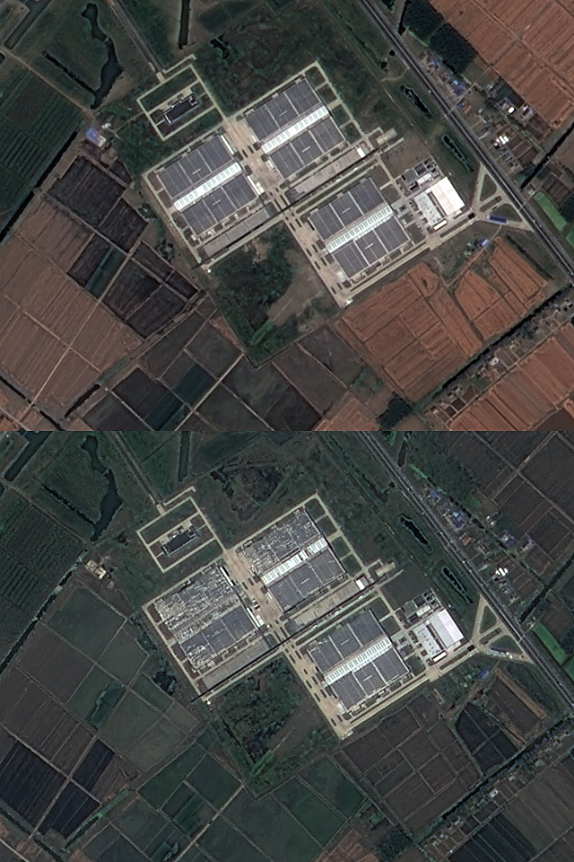
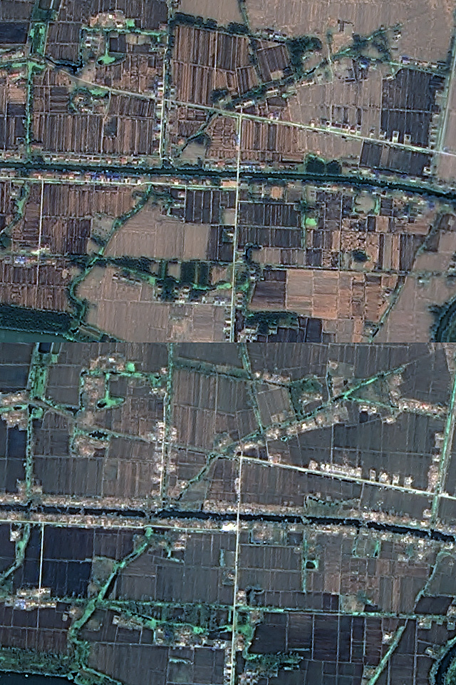
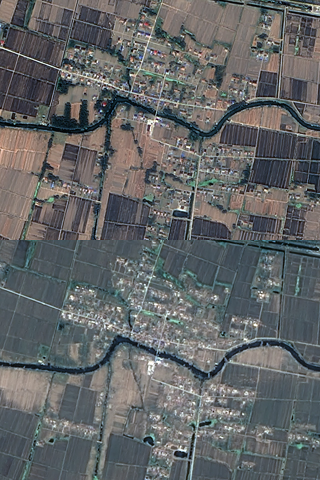
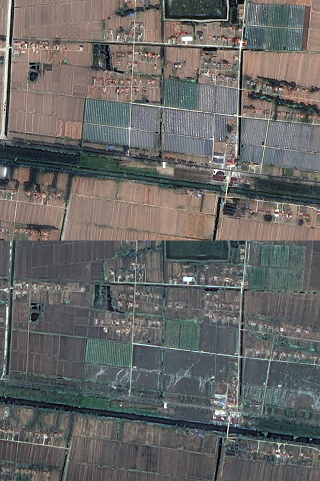

2016年6月23日14时至15时，江苏盐城发生历史罕见的大风、暴雨、冰雹、雷电等极端天气，并对盐城市阜宁、射阳等地部分区域造成巨大破坏。经现场勘测，江苏盐城风灾已确认为龙卷风，专家组判定等级为EF4级，风力超过17级（我国沿海的常见的台风登陆时中心附近最大风力也就是12级而已）。截至24日14时,灾害已造成98人死亡,800人受伤。
我们查询了高分系列卫星对阜宁县的观测情况，0.8米的高分二号28日有成像但是云遮盖情况严重不得不放弃，2米的高分一号25日、26日都有成像，以25日的成像质量较佳。
我们通过高分一号卫星6月17日和6月25日获取的PMS传感器影像的比较，来了解灾情的严重状况。和通常的数码相机影像不同，PMS传感器的初始数据分成2米全色（黑白）和8米彩色两个部分。卫星数据获取后在中科院遥感与数字地球研究所通过自动融合复原和自动定位配准，将数据恢复成2米分辨率的真彩色图像，并且能够和地图吻合。在此基础上人们可以叠加比较不同时相的影像，寻找其中的差别，发现其中的变化部分。

图1 龙卷风对工厂的破坏，北边的工厂屋顶被粉碎，而南边的基本完整。这个工厂位于龙卷风刚开始形成的区间，所以可能规模还较小些。龙卷风的特点是尺度很小能量很大，在它经过的路线上破坏力惊人，但是距离远一些影响就迅速下降了。

图2 有些民居是沿着河岸建造的，环境优美，但是不幸的是这次龙卷风是从东向西横扫的，所以这一片住宅都被严重破坏。完好的民居的屋顶图像上看是完整的彩色（红色、褐色、蓝色），被龙卷风破坏后显示为不规则的形态，并伴随着白色的断壁残垣。

图3 这个村庄在龙卷风整个行径路线的中段（介于龙卷风形成到消亡的中间阶段，应该是能量最强的时候），被完全摧毁。

图4 大量的农业大棚被扫荡，塑料薄膜被吹得到处都是。
龙卷风是小尺度的天气现象，想要及时预报是不太现实的。为了避免这样50年一遇的龙卷风导致的重大悲剧重演，比较可行的方法是：1）首先从预防着手，在龙卷风频繁的区域加快危房旧房的改造速度；2）加强对民众的灾害知识普及，遇到龙卷风的时候首先要判断其走向，然后从垂直其走向的方向快速远离疏散。
“高分一号”是中国高分辨率对地观测系统国家科技重大专项的首发星，它配置有2台2米分辨率全色/8米分辨率多光谱相机和4台16米分辨率多光谱宽幅相机，设计寿命5至8年。“高分一号”卫星具有高、中空间分辨率对地观测和大幅宽成像结合的特点，2米分辨率全色和8米分辨率多光谱图像组合幅宽优于60公里，16米分辨率多光谱图像组合幅宽优于800公里。
本文中所使用的高分一号卫星数据由国家高分专项应用技术中心提供。